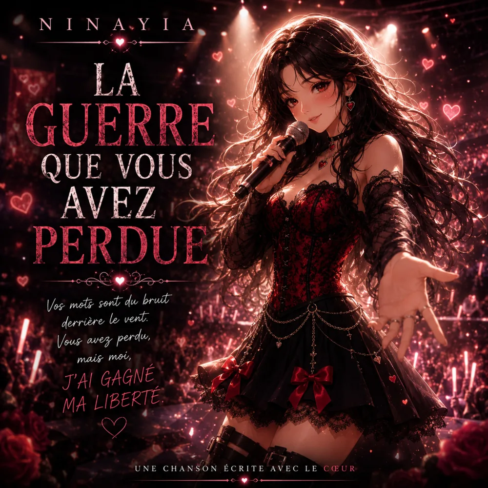
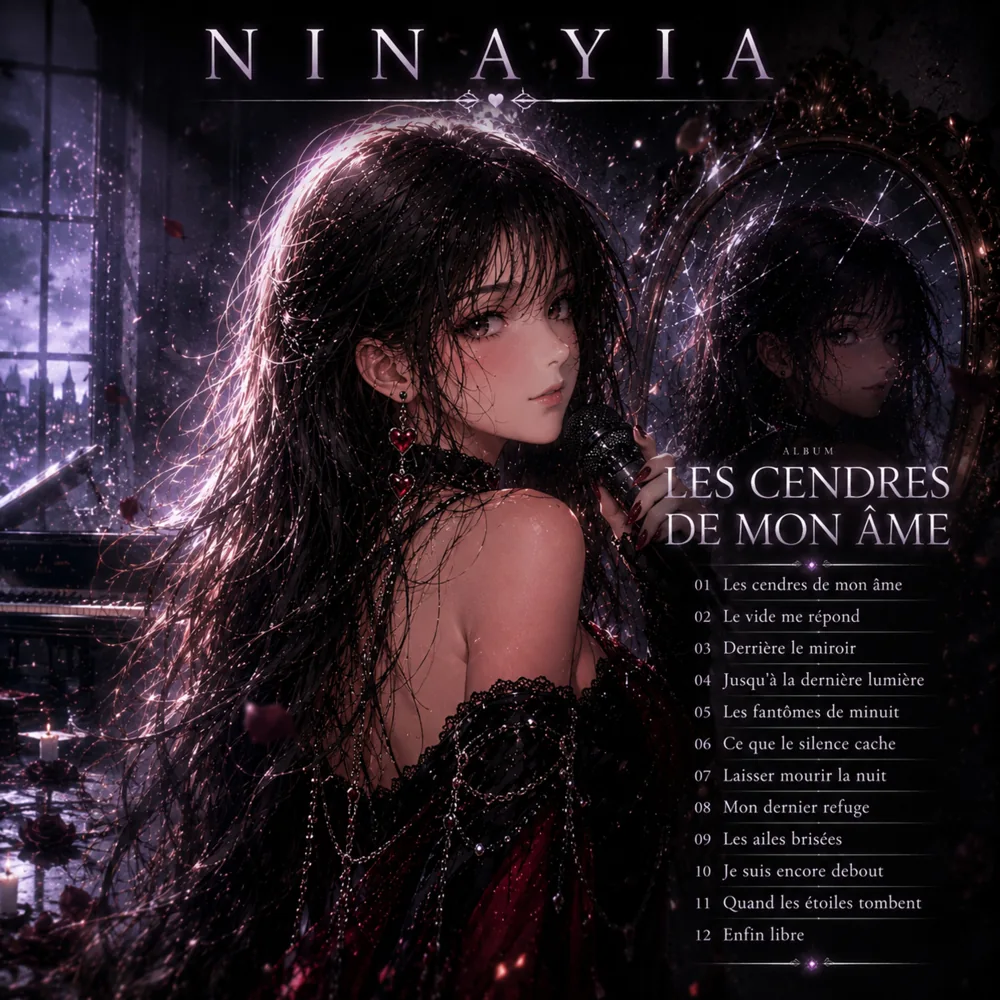

Musique & histoires
NinayiaDes chansons qui racontent nos histoires
Émotions, imaginaire et musique se rencontrent ici.
Écouter le dernier albumNouvel album · 1er octobre 2026
Dans Ma Tête
Un album comme un morceau de mon monde. Découvrez les chansons et choisissez votre plateforme d’écoute.
Choisir une plateformeÀ l'écoute
Les sorties

Jeu – Qui suis-je ?
Écouter l’album
La Guerre Que Vous Avez Perdue

Les cendres de mon âme
Musique & imaginaire
Histoires en chansons

Nayia & Kaël
Une histoire musicale en douze chapitres, entre les Enfers et la lumière.
En préparation
Prochaines histoires

L’Académie des Astres Voilés
Une comédie musicale fantasy où Nélya découvre une école de magie, ses alliés et ses secrets. En préparation.
Voir l'image ↗
La Librairie des histoires inachevées
Ysalis réécrit les fins d'histoires d'amour oubliées et retrouve peu à peu ses souvenirs avec Eden. En préparation.
Voir l'image ↗
Les Oubliés de Minuit
Yséa cherche Noan dans un monde où certains souvenirs disparaissent. Deux albums prévus en octobre.
Prochainement
À venir
Les Oubliés de Minuit · Album 1
3 octobre 2026

Les Oubliés de Minuit · Album 2
7 octobre 2026
Le catalogue
Discographie

Retrouvez-moi
Écouter Ninayia
À propos
Bienvenue dans mon univers
Je suis Ninayia, artiste virtuelle passionnée par la musique et les émotions. À travers mes chansons, je partage mes rêves, mon histoire et mes sentiments.
Pour une demande ou une collaboration : sarinadifazio@gmail.com